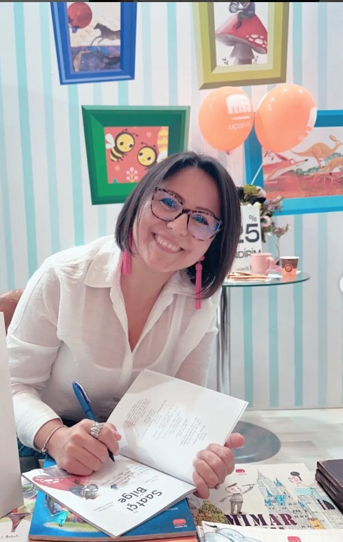
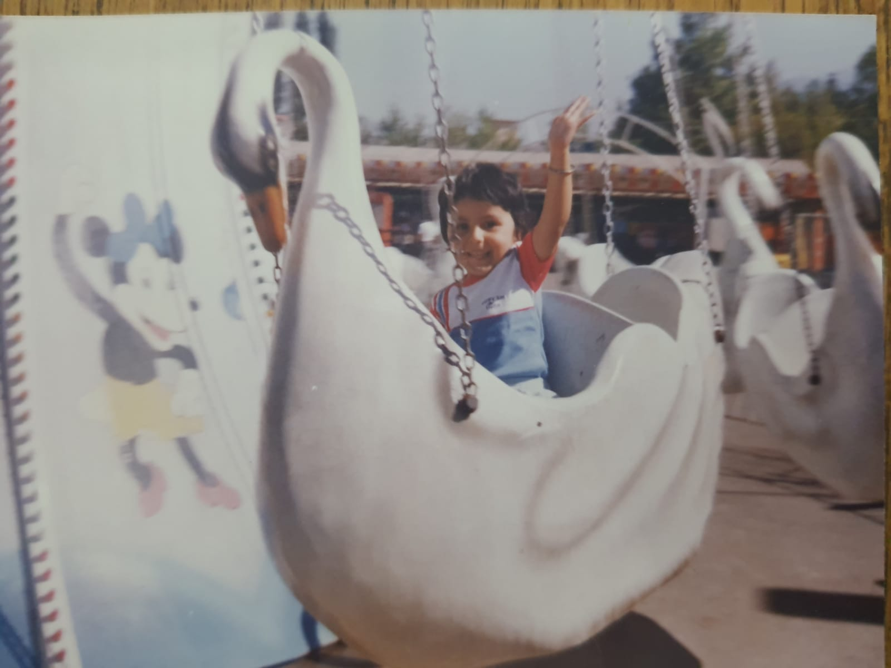

Resimli Kitap
Atlas'ın Origami Günlüğü
Resimleyen: Şebnem Aydın
Katlarım, maceraya atılırım! Atlas ile kâğıttan denizlere açılan neşeli bir yolculuk.
Sen de benim gibi yazının ritmine, kelimelerin dansına, okumaya, yazmaya ve özellikle de çocuk kitaplarına tutkuluysan Yazı Güncesi'ne hoş geldin. İster okur, ister yazmak isteyen biri, ister ebeveyn, ister eğitimci, ister çocuk ol — hiç fark etmez; bu sitede gezinirken eğleneceğine ve kendine dair bir şeyler bulabileceğine eminim. Hadi başlayalım!

Uçan Fil etiketiyle raflarda buluşan çocuk kitaplarım.
Resimleyen: Şebnem Aydın
Katlarım, maceraya atılırım! Atlas ile kâğıttan denizlere açılan neşeli bir yolculuk.

Resimleyen: Kübra Aslan
Mevsimlerle birlikte değişmeyi öğrenen sevimli bir ağacın hikâyesi — üstelik bir de şarkısı var!

Resimleyen: Demet Özdemir
Zıpzıp'la Hophop, zamanla ilgili sorunun cevabı için Saatçi Bilge Kurbağa'ya gider. Bakalım zamanın değerini anlayacaklar mı?
21 yıldır çocukların içindeyim. Çocuklar için hazırladığım şarkılar, etkinlikler ve atölyelerle yolumuz kesişsin istiyorum.
Çocuklar İçin Bölümü
Adım üstümde: “Hülya”… Tam bir hayalperest.
Ben Hülya; 21 yılını çocukların içinde geçirmiş bir eğitimci ve aynı zamanda çocuk kitabı yazarıyım. Hayal kurmayı, yazmayı, öğrenmeyi ve hayata farklı pencerelerden bakmayı seviyorum.
Bu sitede yazı yolculuğumu, yazılarımı ve etkinliklerimi paylaşırken sizlere de rehberlik etmek niyetindeyim. Umarım birlikte bu güncenin sayfalarını doldururuz.